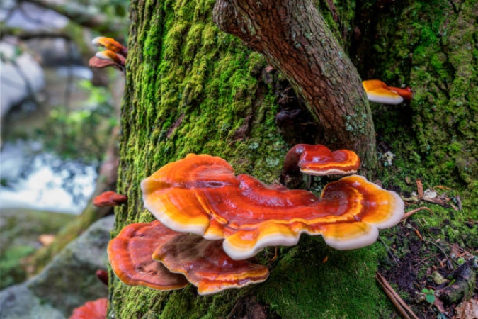
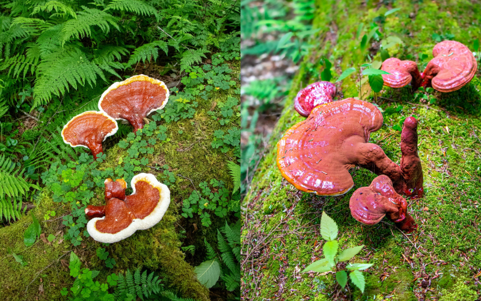

Reishi mushrooms (Ganoderma lucidum) have been treasured in traditional medicine for thousands of years, especially in East Asia where they are known as the “Mushroom of Immortality.”
This striking fungus is believed to support immune health, reduce stress, and promote longevity.
Reishi grows primarily on hardwood trees and is renowned for its glossy, varnish-like surface and rich red-brown coloration.
Unlike many edible mushrooms, it has a tough, woody texture and is typically consumed in the form of teas, tinctures, or powdered extracts rather than eaten fresh.
Beyond its medicinal uses, Reishi plays an important ecological role in decomposing dead wood and recycling nutrients, helping sustain healthy forest ecosystems.
Identification Guide

Reishi (Ganoderma lucidum and related species)
is a distinctive polypore fungus recognized for its varnished, lacquer-like surface
that shines in shades of deep red, orange, and brown.
The kidney-shaped cap often features concentric growth rings, giving it a striking, layered appearance.
Instead of gills, Reishi has a white pore surface underneath that gradually turns yellow or brown with age.
The pores are tiny and release brown spores.
Reishi typically grows at the base of hardwood trees like oak and maple, often on stumps or logs,
but can also be found on conifers depending on the species.
This mushroom is tough and woody, making it inedible in the traditional sense, but highly valued for
medicinal teas, tinctures, and extracts.
When identifying Reishi, look for its varnished surface, lack of gills, and tough texture.
Avoid confusing it with other Ganoderma species that may lack the signature shine or differ in color.